North America · Buckwheat
Acadian Ployes
Mild buckwheat, soft on one side, with a few holes like a thick crepe.
281 pancakes in this issue · Growing to 1,000
A travel journal · Issue 01
The voyage starts here. You move by hot air balloon, plane, train, and boat, and you stop to cook. This issue holds 281 pancakes and their griddled cousins, from johnnycakes and crepes to dosa, injera, okonomiyaki, and cachapa. The journal is growing to 1,000.
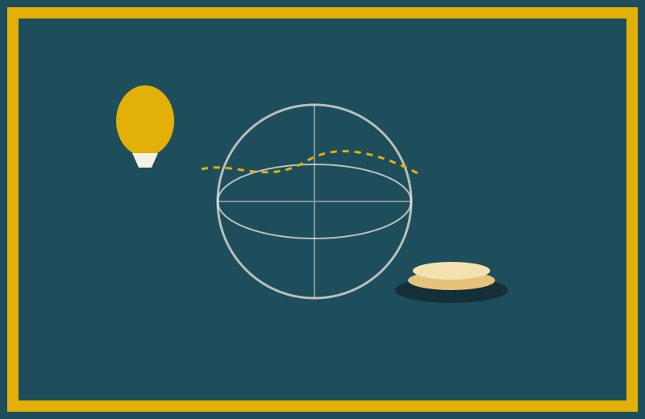
United States
Corn was already here. English griddles, African American hoe cakes, Jewish latkes, Nordic church suppers, and a German oven pancake misnamed Dutch all changed the map.
30 pancakesSouth Asia
A fermented rice crepe is not a chickpea pancake cooked the same morning. The train through India keeps them apart.
19 pancakesEast Asia
Jianbing, Osaka okonomiyaki, and pajeon share a griddle and not a recipe.
18 pancakesAfrica
Injera, kisra, masa, and baghrir. Several countries. No single pancake for a continent.
281 pancakes
No pancakes match. Clear a filter and try a country, a heat level, or a single ingredient.
North America · Buckwheat
Mild buckwheat, soft on one side, with a few holes like a thick crepe.
South Asia · Fermented batter
A thick, savory pancake of mixed dals and rice, spiced with chile and curry leaf.
Northern Europe · Wheat batter
Spherical pancakes, browned in a special pan, dusted with sugar.
Northern Europe · Egg cake
A thick, fried egg cake from Skåne, served with bacon and lingonberry.
Northern Europe · Oven pancake
A baked rice and cardamom pancake from the Åland Islands.
North America · Wheat batter
Mildly sour, sturdy cakes from a live starter.
North America · Wheat batter
A tall, plain buttermilk cake with a tender crumb.
South America · Wheat batter
A wheat arepa from the Andes, softer and breadier than the corn cake.
Southeast Asia · Filled pancake
A thick turnover pancake filled with crushed peanuts and sugar.
North America · Buckwheat
Earthly buckwheat, a little sour, with a sturdy crumb.
North America · Corn griddle
Toasted meal, tangy milk, and a sturdy round.
Western Europe · Wheat batter
A plate-sized pancake with tender apple cooked into it.
South America · Corn griddle
A corn arepa griddled and often finished with a little butter, served beside the meal.
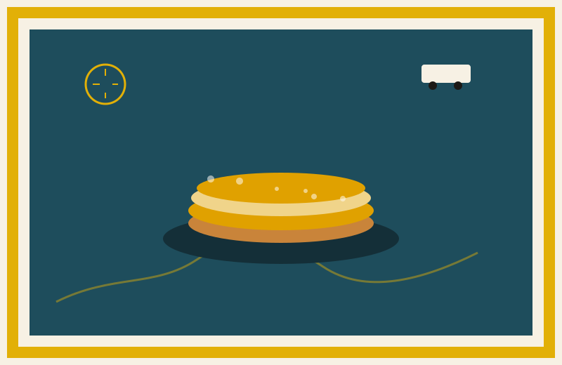
ColombiaSouth America · Corn griddle
A toasted corn arepa from Boyacá, often sweetened and served with cheese.
South America · Corn griddle
A sweet fresh-corn arepa, often with cheese, folded or topped.
South America · Fried cake
A fried corn cake with an egg inside, a coastal street food.
Southern Europe · Crepe
Thin carnival pancakes from Asturias, finished with sugar or honey.
Oceania · Griddled flatbread
A simple baking-powder bread, traditionally campfire cooked, here in a covered pot.
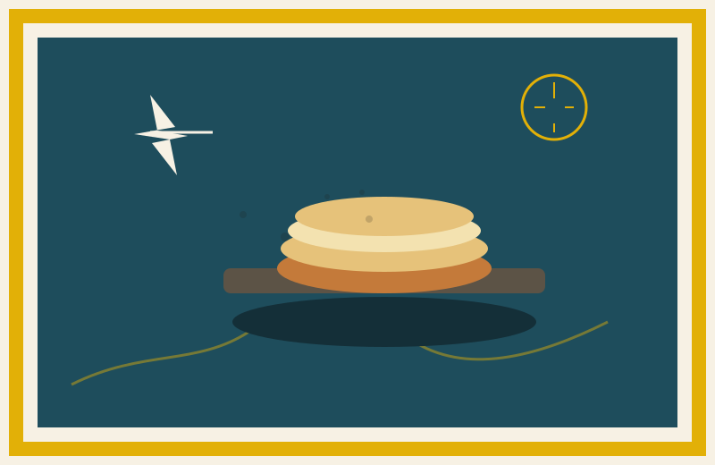
AustraliaOceania · Wheat batter
A larger, softer breakfast pancake than a pikelet, served with lemon and sugar or syrup.
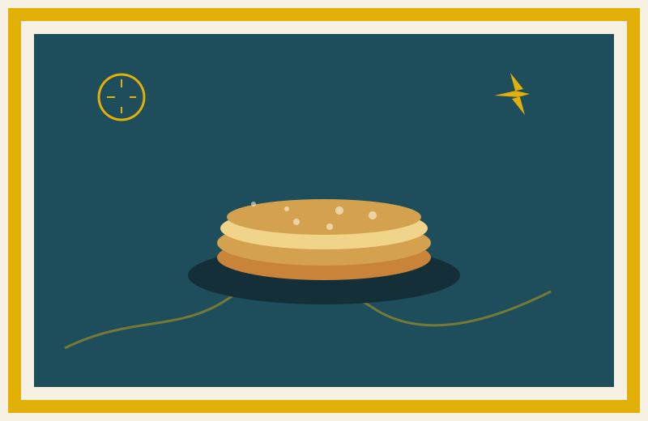
MoroccoNorth Africa · Wheat batter
A semolina pancake cooked on one side, full of holes, eaten with butter and honey.
Caribbean · Oven pancake
A slightly sweet, dense cornmeal bread, baked, with a tender crumb.
Mexico & Central America · Griddled flatbread
A soft flour tortilla folded around refried beans and cheese.
Southeast Asia · Rice batter
Tiny crisp rice cakes cooked in a well pan, topped with shrimp.
Southeast Asia · Rice batter
A crisp turmeric rice crepe filled with shrimp, bean sprouts, and herbs.
Southern Europe · Corn griddle
A toasted corn flatbread, often wrapped around chistorra or chocolate.
South America · Cassava bread
A plain cassava-starch bread, softer and less filled than a street tapioca.
Caribbean · Wheat batter
A frying-pan bread, dense and lightly salted, cooked in a covered skillet.
South Asia · Fermented batter
A crisp fermented dosa finished with a notable amount of butter.
Western Europe · Griddled flatbread
Malty, earthy barley bread cooked on a girdle.
South Asia · Chickpea batter
A savory chickpea-flour pancake with onion, chile, and spices.
Southeast Asia · Rice batter
A baked rice cake, tender, traditionally cooked in a clay pan lined with banana leaf.
Central Asia · Filled pancake
A thin stuffed flatbread filled with potato or lentils, pan-cooked.
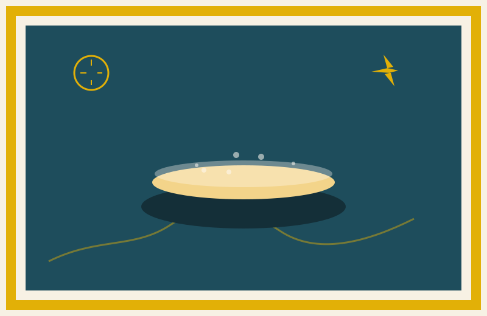
BrazilSouth America · Filled pancake
Savory crepes rolled around a meat filling and baked with sauce.
South America · Cassava bread
A crisp-edged crepe of hydrated tapioca starch, filled with cheese or coconut.
Eastern Europe · Potato cake
Potato pancakes, crisp, served with sour cream or bacon.
South America · Corn griddle
A sweet-corn pancake, soft and irregular, often folded with cheese.
North America · Wheat batter
Tangy sourdough cakes, richer than the Alaskan camp version.
North America · Griddled flatbread
Mild baking-powder bread, browned in a skillet, soft inside.
North America · Wheat batter
Sharp cranberry against a mild buttermilk cake.
North America · Corn griddle
Sweet-corn meal, buttermilk, and a crisper edge than a wheat cake.
South Asia · Fermented batter
A soft, sour rice-and-lentil crepe from Odisha, a dosa cousin.
South America · Fried cake
Fried pumpkin breads, eaten with pebre or with a sweet syrup.
South Asia · Rice batter
A soft, holey rice cake from Odisha, served with milk or molasses.
South Asia · Rice batter
A soft rice cake full of holes, like a Bengali cousin of baghrir.
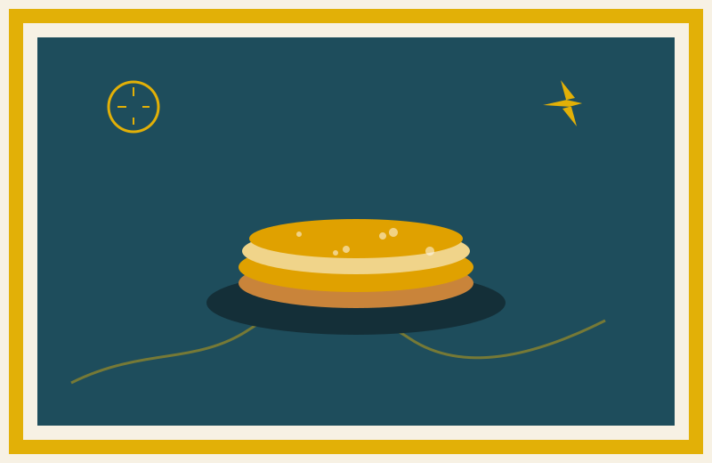
Costa RicaMexico & Central America · Corn griddle
Soft nixtamal corn flatbreads, toasted on a comal.
Western Europe · Wheat batter
Thick, buttermilk-rich Welsh pancakes, often stacked with butter.
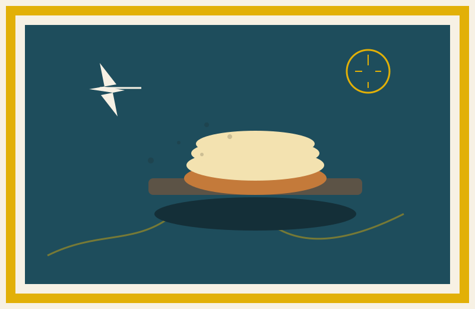
ItalySouthern Europe · Crepe
Thin Italian pancakes, usually rolled around a savory filling and baked.
Western Europe · Wheat batter
Spongy, salty, and full of holes, made to be toasted and buttered.
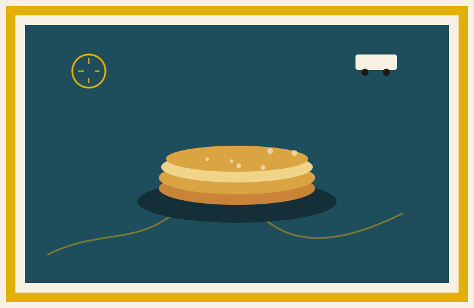
Indonesia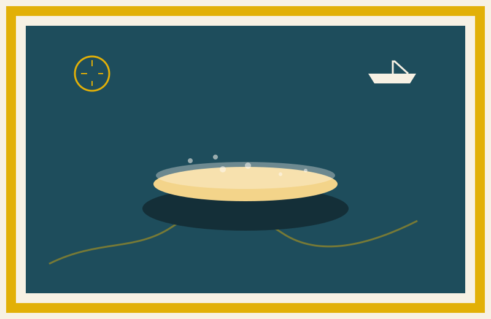
DenmarkWestern Europe · Oatcake
A soft oat pancake, a neighbor to the Staffordshire cake.
South Asia · Fermented batter
A thick, pan-fried rice and dal cake, crisp outside and soft inside.
East Asia · Filled pancake
Two small honey-sweet pancakes sandwiched with sweet red bean paste.
Eastern Europe · Potato cake
Crisp potato pancakes, a Belarusian national dish, with sour cream.
Western Europe · Wheat batter
A large, thin-but-sturdy pancake, often eaten with bacon or apple.
South Asia · Fermented batter
A fermented dosa with an egg cracked on top and cooked until set.
East Africa · Fermented batter
A sour teff flatbread, the sister of Ethiopian injera, served with stews.
Eastern Europe · Crepe
Thin pancakes, rolled with jam or served with savory fillings.
Southern Europe · Chickpea batter
Chickpea, olive oil, and salt, a little thicker than Nice socca.
Western Europe · Filled pancake
A crêpe rolled around ham and mushrooms in a creamy sauce, then baked.
Southeast Asia · Wheat batter
A soft breakfast pancake, often served with butter and sugar or syrup.
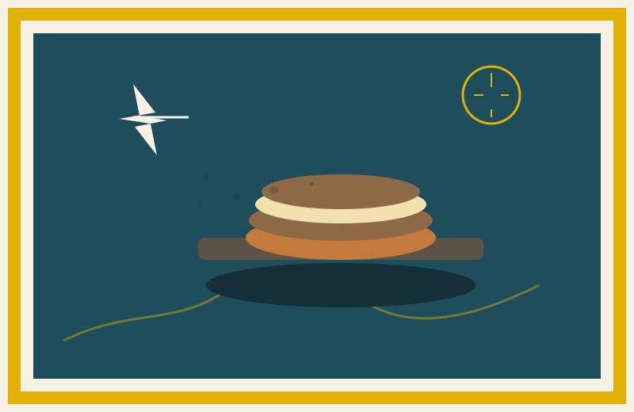
Finland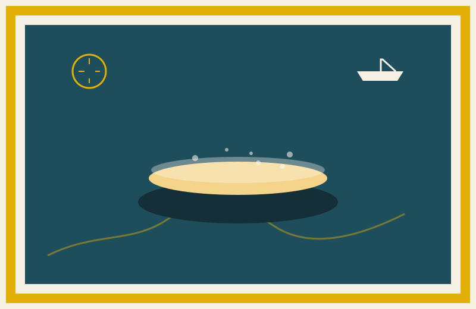
FinlandNorthern Europe · Crepe
A thin Finnish pancake, often served with jam or whipped cream.
Northern Europe · Oven pancake
A cardamom-scented baked pancake, custardy in the center.
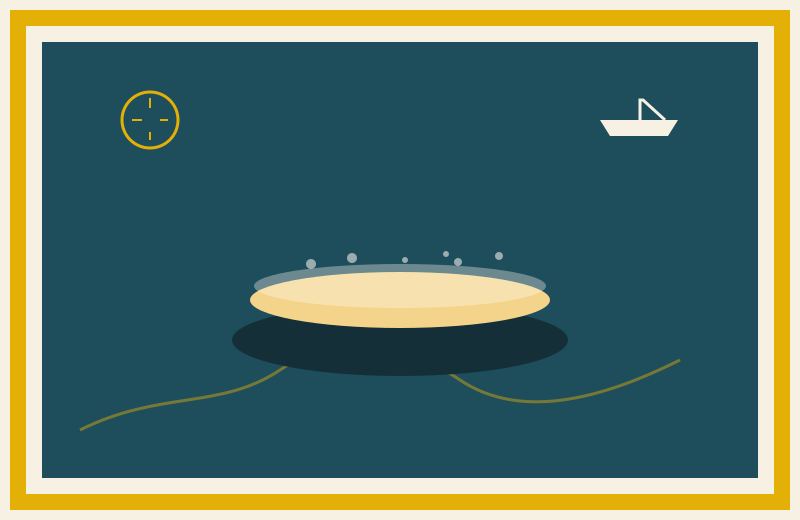
Netherlands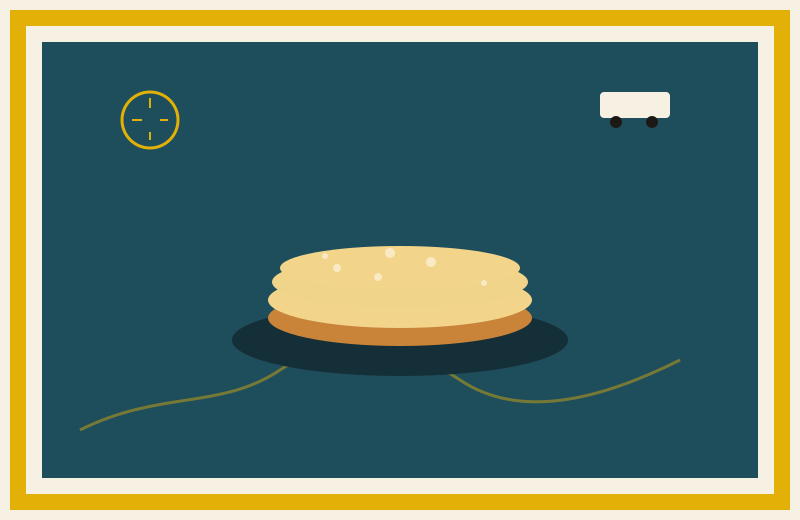
AlbaniaMexico & Central America · Griddled flatbread
Soft wheat tortillas with a few browned spots.
Western Europe · Buckwheat
Earthly buckwheat, lacy and flexible, with a toasted edge.
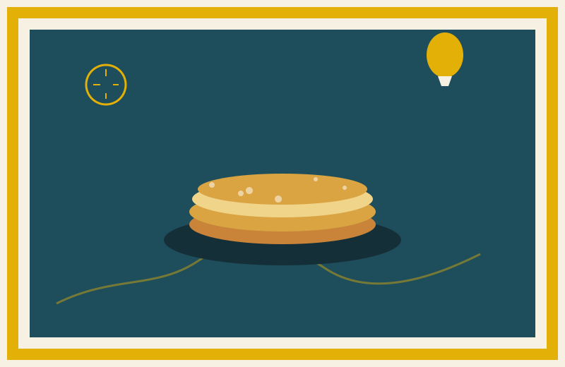
FranceSouthern Europe · Crepe
Thin Galician pancakes, often with sugar or a meat filling at carnival.
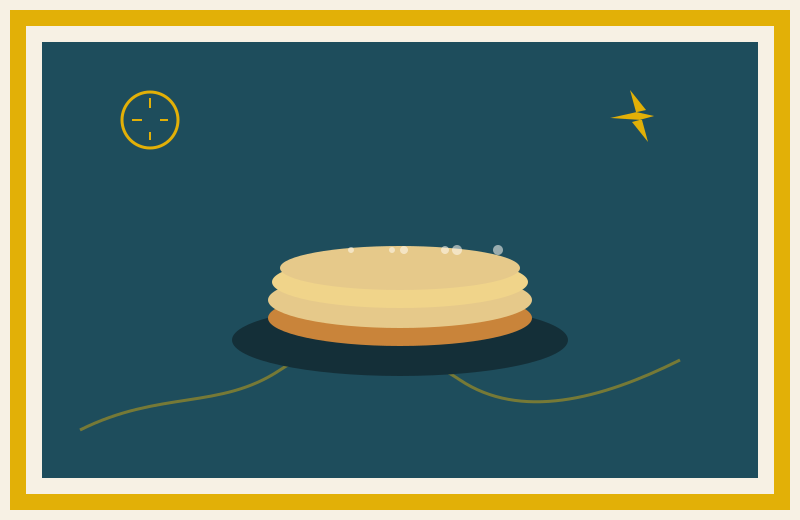
South KoreaWestern Europe · Wheat batter
An eggier German pancake, served with sugar or applesauce.
South Asia · Wheat batter
A soft whole-wheat dosa, milder and quicker than a fermented rice dosa.
Mexico & Central America · Corn griddle
Soft fresh-corn cakes, traditionally eaten with cuajada cheese.
South Asia · Chickpea batter
A soft besan pancake with turmeric, sesame, and green chile.
Caribbean · Filled pancake
A roti stuffed with seasoned split peas, griddled.
East Asia · Crepe
A thin sweet crêpe wrapped around whipped cream and fruit, a street snack.
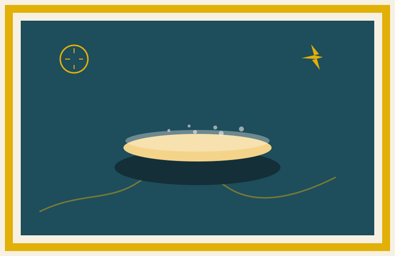
JapanEast Asia · Vegetable pancake
A layered savory pancake: crepe, cabbage, noodles, and egg.
North America · Corn griddle
Toasted cornmeal, salt, and the taste of a hot greased griddle.
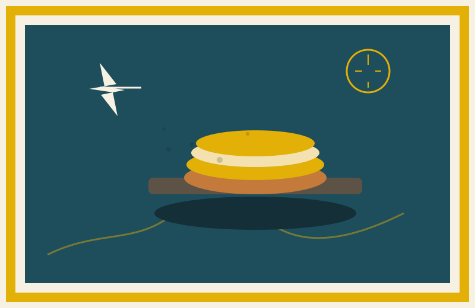
Mexico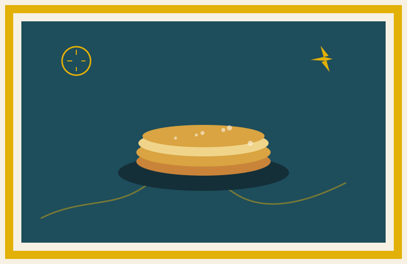
South KoreaEast Asia · Filled pancake
A stuffed street pancake with brown sugar, cinnamon, and nuts, pressed crisp.
Mexico & Central America · Corn griddle
An oval masa cake, sandal-shaped, topped with beans and salsa.
East Asia · Filled pancake
Round filled cakes cooked in iron molds, usually with red bean paste.
East Africa · Fermented batter
Sour, spongy teff flatbread, cooked on one side so the top is full of eyes.
Western Europe · Wheat batter
Small, thick buttermilk cakes, lightly sweet.
Western Europe · Potato cake
Soft potato flatbread, spotted brown, with a floury face.
Western Europe · Crepe
Thin, lemony pancakes fried in butter for Shrove Tuesday.
Western Europe · Griddled flatbread
Soft soda bread, griddled, with a tender crumb and a floury crust.
Caribbean · Cassava bread
A dense cassava cake, griddled, then often soaked and fried to finish.
East Asia · Wheat batter
Thick, fluffy buttermilk-style pancakes, a kissaten breakfast.
East Asia · Wheat batter
Very tall, jiggly pancakes of whipped egg white, a modern café style.
Western Europe · Wheat batter
A torn, soufflé-like pancake with raisins, dusted with sugar.
North America · Oven pancake
A soft cornmeal custard, rich with butter and egg, spooned rather than sliced.
South Asia · Fermented batter
A bowl-shaped rice pancake, lacy at the rim and soft in the center.
Southeast Asia · Crepe
Crisp Thai crepes folded over a sweet meringue-like filling and savory threads.
Southeast Asia · Rice batter
Small coconut-rice cakes, crisp outside and custardy in the center.
Northern Europe · Wheat batter
A thick pork-flecked pancake cooked outdoors in the old style, here in a skillet.
Western Europe · Potato cake
Buttery mashed potato and flour, griddled in spots.
East Africa · Fermented batter
A spongy, lightly sour flatbread, softer and often smaller than injera.
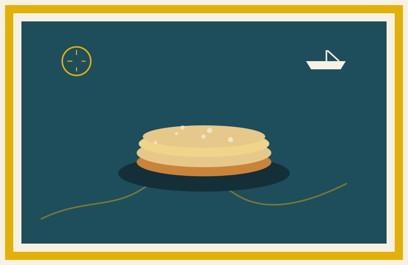
NorwayEastern Europe · Wheat batter
Yeasted pancakes, soft and slightly sour, served with jam or sour cream.
South America · Potato cake
Pan-fried potato cakes stuffed with cheese, served with peanut sauce.
North America · Wheat batter
Tart wild blueberry bursting through a simple batter.
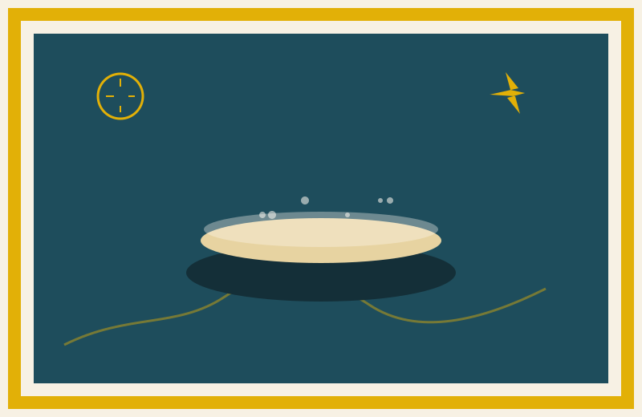
YemenMiddle East · Griddled flatbread
A flaky pan-fried layered bread, crisp outside and soft within.
East Africa · Wheat batter
A soft, sweet pan-fried bread, often with egg, cardamom, and a little sugar.
Middle East · Griddled flatbread
A flatbread topped with za'atar and olive oil, baked or cooked on a griddle.
East Asia · Wheat batter
Thin, steamed-then-pan wheat pancakes for wrapping Peking duck or stir-fries.
Oceania · Fried cake
Fried dough, blistered and soft, a Māori takeaway and hāngī bread.
Southeast Asia · Filled pancake
A thick, sweet, yeasted pancake folded over chocolate, cheese, and peanuts.
Southeast Asia · Filled pancake
A thin crisp wrapper around a spiced egg-and-scallion filling.
North Africa · Griddled flatbread
A round, coiled flatbread, flaky and rich, cooked on a griddle.
Mexico & Central America · Wheat batter
A diner-style pancake, often served with cajeta or condensed milk.
North America · Wheat batter
Tart dried or fresh cherries in a buttermilk cake.
South America · Potato cake
A dense potato cake from Chiloé, boiled, baked, or pan-cooked. This one is pan-cooked.
North America · Wheat batter
Nutty popped wild rice in a mild buttermilk cake.
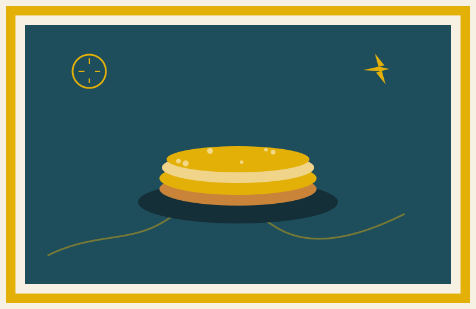
JapanEast Asia · Vegetable pancake
A loose, savory batter, scraped and crisped on the griddle, runnier than okonomiyaki.
Southeast Asia · Rice batter
Small rice cakes cooked in pairs in a well pan, crisp-edged and soft inside.
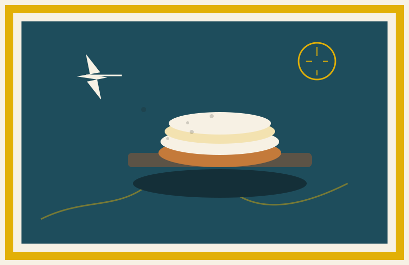
IndiaSouth Asia · Rice batter
A savory pancake of soaked yellow moong dal, ginger, and green chile.
North America · Wheat batter
Plain, tangy, and a little less sweet than a diner stack.
Middle East · Vegetable pancake
Zucchini fritters with dill and a little cheese, fried as small cakes.
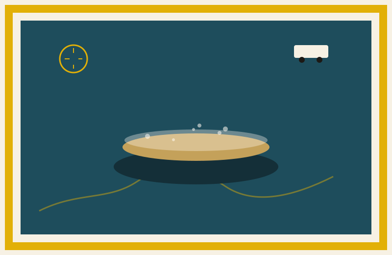
IndiaSouth Asia · Filled pancake
A dosa spread with a red chile-garlic chutney, then filled with potato.
North America · Corn griddle
Slate-blue corn, a little sweet, with a toasted smell.
North America · Egg cake
Custard-soaked bread, browned in butter, with brandy or orange in some pots.
North America · Filled pancake
Thin egg crepes folded around sweet cheese, browned in butter.
Oceania · Wheat batter
Small drop scones, a close cousin of the Australian pikelet, served with butter and golden syrup.
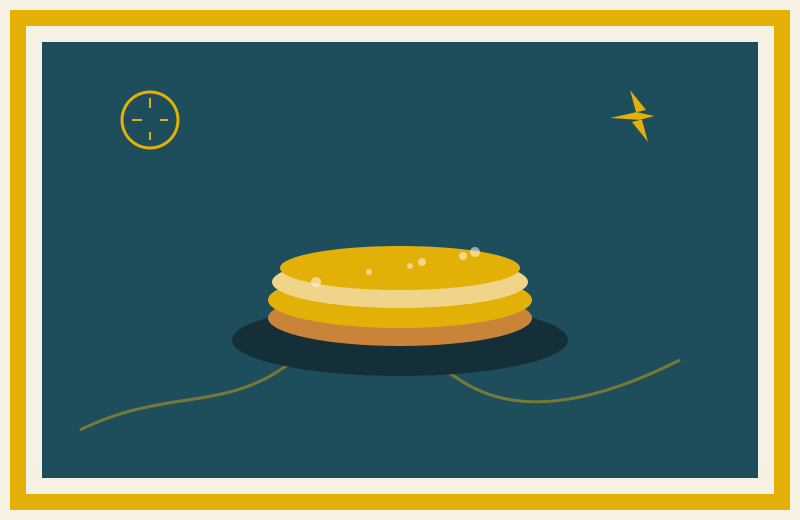
JapanEast Asia · Vegetable pancake
A thick cabbage pancake, savory, finished with sauce, mayonnaise, and bonito flakes.
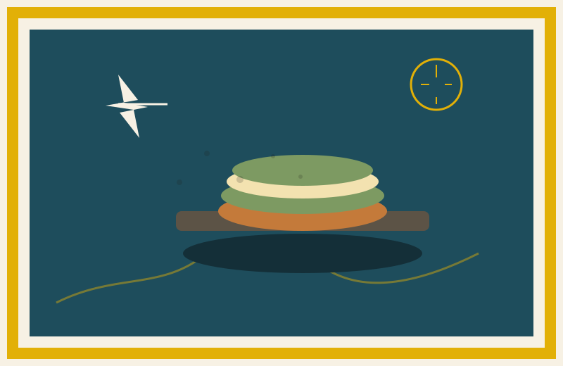
South Korea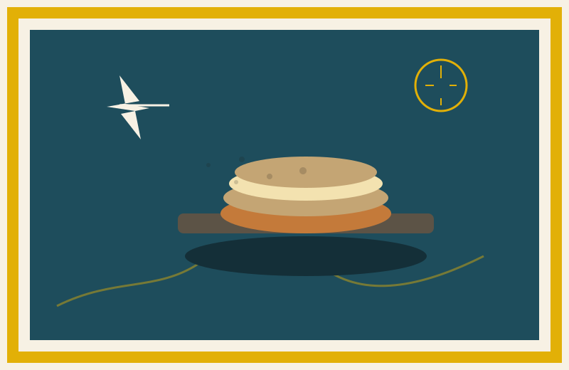
IndiaSouth Asia · Fermented batter
Small round fermented-rice cakes from a special pan, crisp outside.
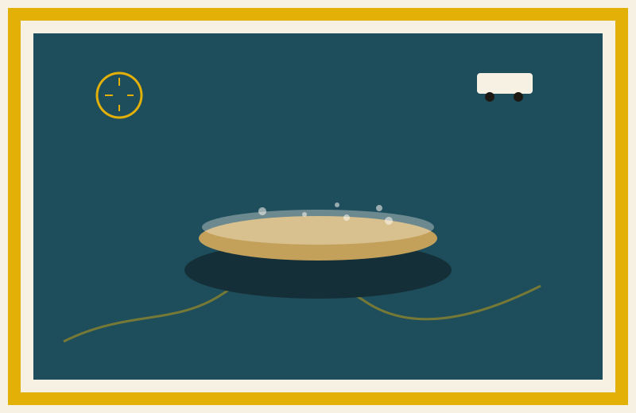
IndiaSouthern Europe · Fried cake
Salt-cod and onion fritters, crisp outside and soft inside.
North America · Potato cake
Shredded potato and onion, bound with egg and a little flour.
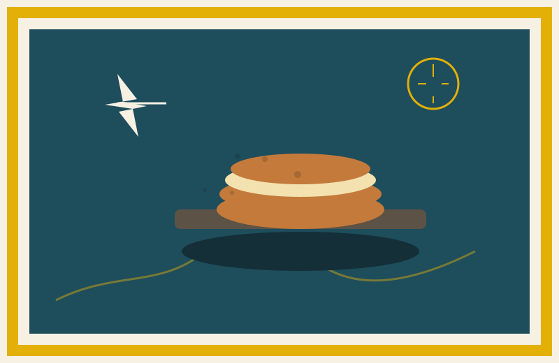
AlbaniaEastern Europe · Fried cake
Irregular fried dough pieces, crisp and puffy, with cheese or honey.
Southeast Asia · Filled pancake
A flat griddled bread from Bacolod filled with muscovado sugar.
Western Europe · Wheat batter
Tiny, puffy buckwheat-and-wheat cakes with butter and powdered sugar.
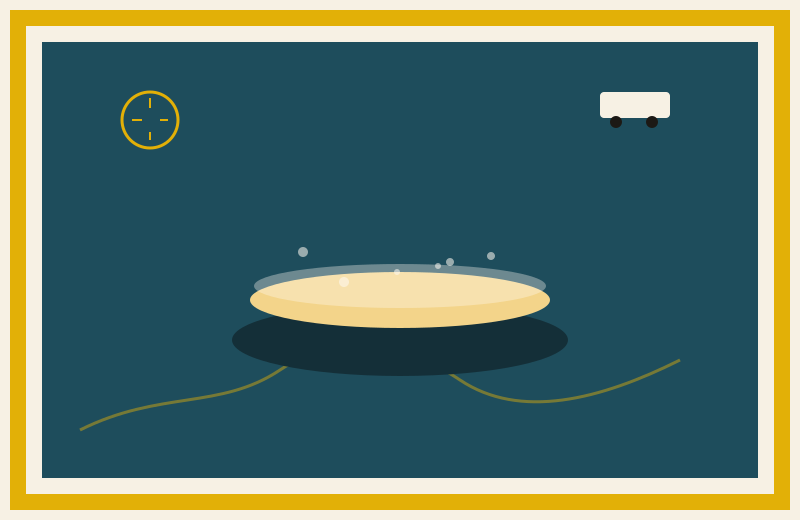
PolandEastern Europe · Potato cake
Crisp potato pancakes, served with sour cream or sugar.
Mexico & Central America · Corn griddle
Thick stuffed corn cakes, griddled, served with curtido.
Middle East · Filled pancake
Small yeasted pancakes, cooked on one side, filled with cheese or nuts and sweetened.
Caucasus · Filled pancake
Thin folded flatbreads filled with greens or meat, cooked dry on a griddle.
Northern Europe · Potato cake
Grated raw potato in a batter, fried, with pork and lingonberry.
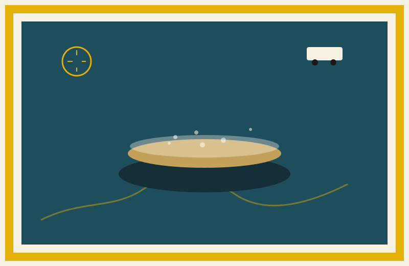
IndiaSouth Asia · Rice batter
A lacy, crisp instant dosa of semolina and rice flour, with onion and chile.
North America · Corn griddle
Soft corn interior, browned face, and the sweetness of milk.
North America · Corn griddle
Crisp, lacy corn, salted, with a toasted smell.
Southeast Asia · Griddled flatbread
A flaky griddled bread, stretched thin, for dal or curry.
Eastern Europe · Wheat batter
Yeasted wheat pancakes, lightly sour, full of small holes.
Northern Europe · Oven pancake
A baked rice pancake perfumed with saffron, served with jam and cream.
Oceania · Cassava bread
A plain cake of sago starch and water, cooked on a griddle.
Mexico & Central America · Corn griddle
Puffed fried masa cakes from Yucatán, topped simply in this version.
East Asia · Griddled flatbread
A flaky pan-fried bread layered with scallion and oil.
North America · Oven pancake
A puffed oven pancake, crisp at the rim, eggy in the center.
Southeast Asia · Rice batter
Small coconut-rice pancakes, sometimes sweet and sometimes savory.
Eastern Europe · Crepe
Thin crepes filled with jam, walnuts, or Eurocrem-style chocolate spread.
North America · Wheat batter
The same buttermilk cake as a large pancake, cooked small so the edges crisp.
West Africa · Fermented batter
A fermented millet pancake, sour and soft, from the Hausa kitchen.
Western Europe · Wheat batter
A rich griddle cake with currants, lard or butter, singing as it cooks.
Eastern Europe · Crepe
Thin crepes, often with walnut or apricot, here with apricot jam.
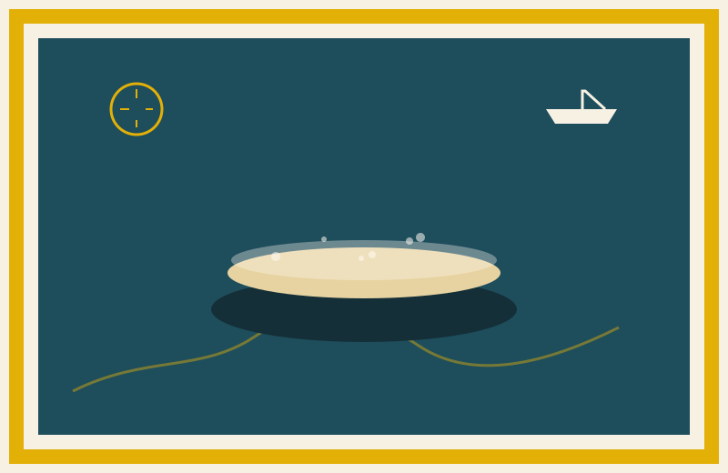
FranceMexico & Central America · Corn griddle
Small thick masa cakes with a pinched rim, topped with beans.
North America · Wheat batter
Mild wheat cake with the mineral sweetness of sorghum in the batter.
Southern Africa · Crepe
A thin, large pancake with cinnamon sugar, a fair and church-fete food.
North America · Wheat batter
Tangy buttermilk, a soft crumb, and a browned butter edge.
Southern Europe · Egg cake
Milk-soaked bread, fried, with cinnamon and honey or syrup.
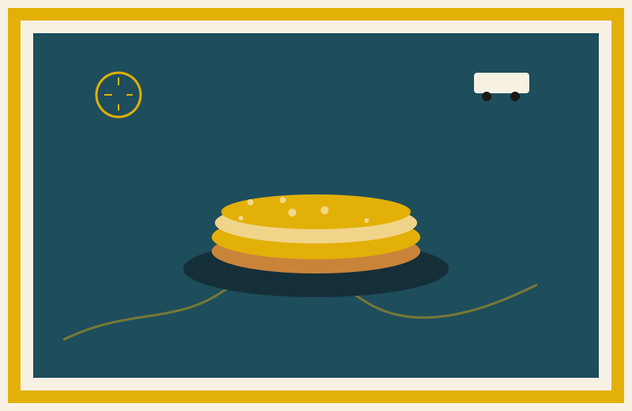
SpainSouthern Europe · Wheat batter
Small, thick Spanish pancakes, milder than a carnival crepe.
South Asia · Fermented batter
A bowl-shaped rice and coconut pancake with a lacy edge.
Western Europe · Oatcake
Soft, savory oat pancakes, meant to be filled and rolled.
South America · Griddled flatbread
A soft roti for curry, close to the Guyanese and Trinidadian breads.
Northern Europe · Wheat batter
A thick, lightly sweet cake, split and spread with brown cheese or jam.
North America · Crepe
Thin, eggy pancakes, often rolled, with lingonberry or butter and sugar.
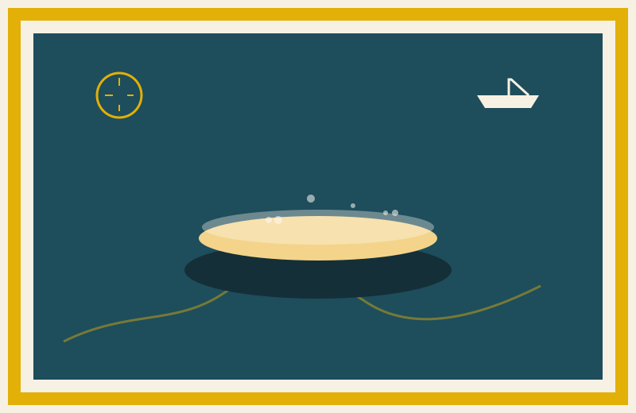
SwedenNorthern Europe · Crepe
Tiny round pancakes from a special iron, with jam or berries.
North America · Wheat batter
Roasted sweet potato, warm spice, and a soft wheat crumb.
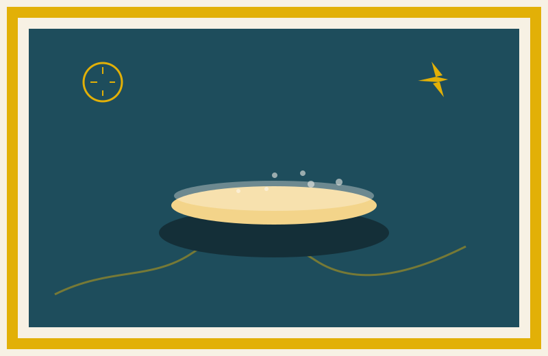
TaiwanEast Asia · Crepe
A thin breakfast crepe with egg, scallion, and a salty-sweet sauce.
South Asia · Griddled flatbread
A multigrain savory pancake with onion, cilantro, and spice, pan-roasted.
Mexico & Central America · Corn griddle
A large, partly dried corn tortilla, toasted and topped with beans and cheese.
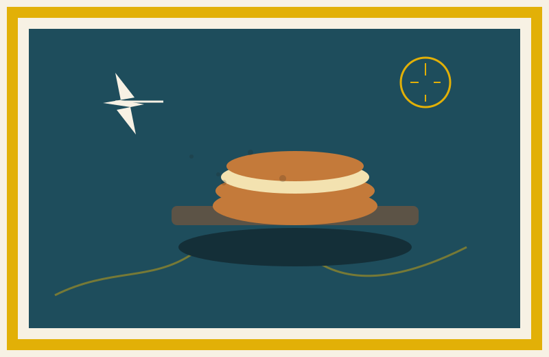
EcuadorSouth America · Fried cake
Green plantain cakes, griddled or pan-fried, salty and starchy.
Southern Europe · Chickpea batter
Lacy chickpea-and-shrimp fritters from Cádiz.
Caribbean · Griddled flatbread
A flaky, layered roti, often torn, for wrapping curry.
Western Europe · Oatcake
Toasted oats, salt, and a dry crisp or a chewy round, depending on thickness.
North America · Oven pancake
A baked custard pancake, browned at the edge and creamy in the center.
South Asia · Fermented batter
A thick, savory dosa pancake with onion and chile cooked into the top.
South America · Corn griddle
Thick corn cakes of precooked maize flour, griddled, then split.
Western Europe · Griddled flatbread
A currant girdle cake, crisp at the edge and soft like a scone.
Middle East · Fermented batter
A spongy fermented pancake, kin to Somali laxoox, eaten with ghee or honey.